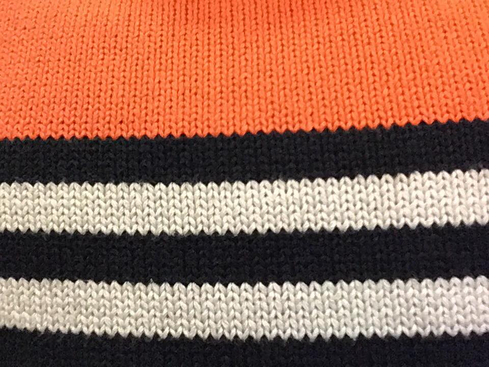

Oh, today I met the landlady and she said during the work they would do to prevent my house to fall apart I would not stay in the apartment upstairs...
I think I would prefer the octopodal mode of thinking through different tentacles that have their own desires, the lures that activate them... But I don't really think that cats cannot do that, or humans - or more-than humans (specially).
Intimate, but not personal.

INFO 1
God morgen.
:tarquin:
:tarquin:

So sad so sexy, spectre confetti

I started sleeping in the living room, to prevent me from sleep walking in the living room and give my feet some rest. Delicious.

INFO 1
Could you live in a place with zero pieces of furniture?


Beautiful name. I pronounce it like ‘hiver’.
INFO 2

A cat versus a squirrel in three pictures: (I am so stupid).
*** Now playing: Ata Kak - Obaa Sima ***
INFO 3>
25.
26.
27.
28.
INFO 4>